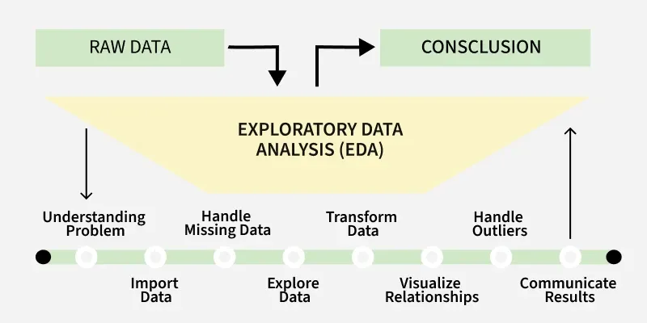
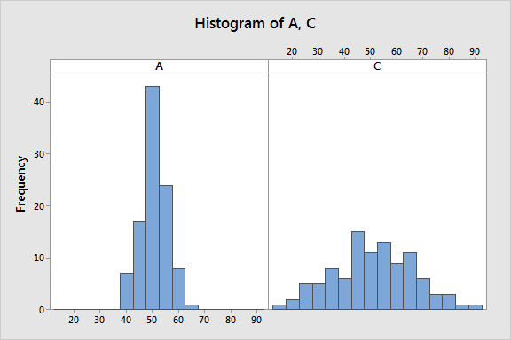
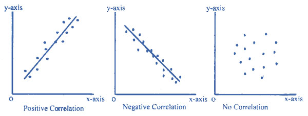

ADS370 · R for Data Science · Week 11
2026-03-30
> HKSYU_ADS370.exe --module EDA --week 11
[ VARIATIONS · PATTERNS · MODELS ]ADS370 R for Data Science | Week 11 | Dr. Ruiwu Niu | HKSYU
readr · Data Import| Function | Purpose |
|---|---|
read_csv() |
Comma-separated files |
read_tsv() |
Tab-separated files |
parse_integer() |
Type coercion helper |
col_types = cols() |
Explicit column schema |
Parsing failures → NA with warnings; always inspect with problems()
Wickham, H., & Grolemund, G. (2017). R for data science. O’Reilly Media. (Ch. 8, 14) · Mailund, T. (2017). Beginning data science in R. Apress. (Ch. 1)
┌─────────────────────────────────────────────────────────────────────┐ │ LOADING MODULES FOR ADS370 WEEK 11 ... │ ├──────────────────────────────────────────┬──────────────────────────┤ │ MODULE │ DURATION │ ├──────────────────────────────────────────┼──────────────────────────┤ │ [§1] What is EDA? │ ~10 min │ │ [§2] VARIATION ◄── CORE TODAY │ ~35 min │ │ Distributions · Binwidth │ │ │ Outliers · Missing Values │ │ │ [§3] COVARIATION │ ~30 min │ │ Boxplots · Counts · Hexbin │ │ │ [§4] PATTERNS & MODELS │ ~20 min │ │ Residuals · Reproducibility │ │ │ [§5] WORKFLOW & PROJECT HYGIENE │ ~15 min │ ├──────────────────────────────────────────┼──────────────────────────┤ │ [AT2] IN-CLASS EXERCISE │ 60 min │ └──────────────────────────────────────────┴──────────────────────────┘
datasets used → diamonds · faithful · iris · mtcars (all R built-in, no download needed)
“EDA is not a formal process with a strict set of rules. More than anything, EDA is a state of mind.”
— Wickham & Grolemund (2017, p. 82)
Exploratory Data Analysis (EDA)
An iterative cycle of generating questions, visualising data, and refining understanding — conducted before formal modelling.
ggplot2 + dplyr as the primary engine
Analogy: EDA is like a detective investigation — you examine clues, form hypotheses, and revise them. You don’t know the answer before you start.
┌────────────────────────────────────────────┐ │ │ │ ① Generate Questions │ │ What patterns might exist? │ │ ↓ │ │ ② Visualise / Transform Data │ │ ggplot2 + dplyr │ │ ↓ │ │ ③ Discover patterns, anomalies, gaps │ │ ↓ │ │ ④ Refine → generate new questions ──────┐ │ │ ↑ │ │ │ └──────────────────────────────────┘ │ └────────────────────────────────────────────┘
Iteration is the key — each pass sharpens your understanding and reveals what to look for next
Q1 · What type of variation occurs within each variable?
Q2 · What type of covariation occurs between two or more variables?
These two questions are the backbone of Wickham & Grolemund (2017), Ch. 5, and Mailund (2017), Ch. 5.
Every visualisation technique we learn today answers one of these.
VARIATION — within a variable
“The tendency of values of a variable to change from measurement to measurement”
— Wickham & Grolemund (2017, p. 83)
geom_histogram(), geom_bar(), geom_density()COVARIATION — between variables
“The tendency for values of two or more variables to vary together in a related way”
— Wickham & Grolemund (2017, p. 93)
geom_point(), geom_boxplot(), geom_tile()━━━━━━━━━━━━━━━━━━━━━━━━━━━━━━━━━━━━━━━━━━━━━━━━━━━━━━━━━━━━━━━━━━━━━━━
Vocabulary: “variable” — any quantity that varies; “value” — its state at one measurement; “observation” — a set of values measured under the same conditions (Wickham & Grolemund, 2017, p. 83).
Variation — the natural tendency of measured values to differ across measurements, even when the underlying quantity is “the same”.
| Domain | Variable | Why it varies |
|---|---|---|
| Meteorology | Daily temp (°C) | Weather, seasons |
| Education | Student GPA | Effort, ability, course |
| Gemology | Diamond price |
Cut, carat, colour |
| Biology | Iris petal length | Species genetics |
| Finance | Stock return | Market, sentiment |

Every real measurement contains variation. The question is not whether it varies — but why, and how much.
Two variable types → different plots
categorical → finite groups (cut, Species) → bar chartcontinuous → any numeric value (carat, price) → histogram→ use geom_bar()
Bar height = number of observations in each category.
ggplot2 automatically counts with stat = "count".
Manual equivalent: diamonds |> count(cut)
→ use geom_histogram()
Bars divide the x-axis into bins of width binwidth.
Bar height = count within that bin.
binwidth controls the resolution of the view.
━━━━━━━━━━━━━━━━━━━━━━━━━━━━━━━━━━━━━━━━━━━━━━━━━━━━━━━━━━━━━━━━━━━━━━━
Rule: geom_bar() for categories → geom_histogram() for numbers. Never swap them — they measure fundamentally different things.
geom_bar() — diamonds Dataset█diamonds$cut — 5 ordered levels:
Fair < Good < Very Good < Premium < Ideal
The ordering is an ordered factor in R.
Manual count:
diamonds |> count(cut)
→ gives same numbers as bar heights
diamonds dataset — 53,940 diamonds.
Variables: carat, cut, color, clarity, price, x, y, z
Source: ggplot2 package (Wickham, 2016)
geom_histogram() — diamonds█ Count
│
▓ │ ← tall bar = common value range
▓▓ │
▓▓▓│
▓▓▓▓▓▓
▓▓▓▓▓▓▓▓▓ ▓
──────────────────→ Carat
[bin = 0.5 wide]binwidth = 0.5)[0, 0.5) carats, next: [0.5, 1.0), etc.binwidth values!“A histogram divides the x axis into equally spaced bins and then uses the height of a bar to display the number of observations that fall in each bin.”
— Wickham & Grolemund (2017, p. 85)
faithful BIMODAL EXAMPLE█faithfuldatasets::faithful
272 observations of Old Faithful geyser (Yellowstone, USA)
Variables: eruptions (duration, min), waiting (time to next, min)
(Härdle, 1991)
Bimodal = two distinct peaks
→ Short eruptions (~2 min)
→ Long eruptions (~4.5 min)
Only visible with binwidth = 0.2!
“Always explore a variety of binwidths when working with histograms, as different binwidths can reveal different patterns.”
— Wickham & Grolemund (2017, p. 87)
Interpretation: Two eruption regimes likely reflect different pressure build-up dynamics in the geyser.
Spikes at 0.5, 1.0, 1.5, 2.0 carats
→ Humans anchor to round numbers
→ Diamonds cut just above a round number command a price premium
→ This is a real-world behavioural artefact encoded in data!
“If you see clusters, ask: How are the observations within each cluster similar to each other? How are they different?”
— Wickham & Grolemund (2017, p. 89)
coord_cartesian() ZOOM█coord_cartesian() vs ylim()coord_cartesian(ylim = c(0, 50))
Zooms the view only — no data removed
✅ Correct way to zoom
ylim(0, 50) inside ggplot
Silently drops out-of-range data before computing
❌ Can distort the histogram!
diamonds$yObserved y |
Interpretation |
|---|---|
y ≈ 0 mm |
Data entry error (impossible) |
y ≈ 30 mm |
Extraordinarily large gem |
y ≈ 60 mm |
Likely input error |
Workflow: Zoom → Extract with filter() → Investigate → Replace with NA if invalid
NANA = “Not Available” — a placeholder for unknown values, not zero.
In R, any arithmetic with NA propagates NA unless explicitly handled.
| Function | Purpose |
|---|---|
is.na(x) |
Test which values are NA |
na.rm = TRUE |
Exclude NA in stat functions |
ifelse(cond, NA, x) |
Conditional NA replacement |
tidyr::drop_na() |
Remove rows containing NA |
naniar::vis_miss() |
Visualise missing pattern |
Golden rule: Never silently drop outliers. Replace with NA first, investigate, then decide. Every deletion must be documented.
iris Dataset█irisdatasets::iris — 150 observations × 5 variables
3 species × 50 flowers each
(Fisher, 1936; Anderson, 1935)
| Variable | Type | Unit |
|---|---|---|
Sepal.Length |
continuous | cm |
Sepal.Width |
continuous | cm |
Petal.Length |
continuous | cm |
Petal.Width |
continuous | cm |
Species |
categorical | — |
Investigation questions:
1. Is Sepal.Length normally distributed?
2. Are all 3 species equally represented?
3. Try binwidth = 0.1 vs 0.5 — what changes?
4. Which variable shows the most variation?
§ 3
COVARIATION
How values of two or more variables move together
geom_freqpoly() · geom_boxplot() · geom_count() · geom_tile() · geom_point() · geom_hex()
━━━━━━━━━━━━━━━━━━━━━━━━━━━━━━━━━━━━━━━━━━━━━━━━━━━━━━━━━━━━━━━━━━
Wickham & Grolemund (2017), Ch. 5, pp. 93–107 · Mailund (2017), Ch. 5, pp. 113–124
Covariation — the tendency for values of two or more variables to vary together in a related way.
When one variable changes, the other tends to change in a consistent direction.
“The best way to spot covariation is to visualise the relationship between two or more variables.”
— Wickham & Grolemund (2017, p. 93)
Covariation ≠ causation.
It signals a relationship worth investigating — not proof of cause and effect.
| Variable types | Question | Geom |
|---|---|---|
| Categorical + Continuous | Does distribution shift by group? | geom_boxplot() |
| Categorical + Categorical | How do counts distribute? | geom_count() / geom_tile() |
| Continuous + Continuous | Is there a trend or cluster? | geom_point() / geom_hex() |

geom_freqpoly()█geom_freqpoly() vs geom_histogram()geom_freqpoly() draws a line connecting bin midpoints — equivalent to a histogram but multiple groups can overlap cleanly without obscuring each other.
binwidth parameter as histogramcolour = maps to group variablegeom_boxplot() — The Workhorse█ price
│ ┌──┐ ← Q3 (75th pct)
│ │ │
│ ───┤ ├── ← Median (Q2)
│ │ │
│ └──┘ ← Q1 (25th pct)
│ │ ← Min (within 1.5×IQR)
│ ··· ← Outliers (beyond 1.5×IQR)
└──────────→ cut
reorder(cut, price, FUN = median) — sorts categories by their median price, making patterns much easier to read (Wickham & Grolemund, 2017, p. 98)
Counter-intuitive finding: Fair cut (worst quality) has a higher median price than Ideal! A confounding variable — carat weight — explains this. EDA reveals the puzzle; modelling in §4 solves it.
geom_count() & geom_tile()█geom_count()
- Circle size ∝ count
- No pre-processing needed
- ✅ Fast to write
- ⚠️ Hard to compare exact sizes
geom_tile() + count()
- Cell colour intensity ∝ count
- Requires dplyr::count() first
- ✅ Easier to read gradients
- ✅ Better for large grids
When to use: Any time you have two categorical variables and want to see if certain combinations are over- or under-represented.
For better colour scales, try scale_fill_viridis_c() — designed to be perceptually uniform and colourblind-friendly (Garnier et al., 2023).
geom_point() — faithful█faithful result: Two clear clusters: - Bottom-left: short wait → short eruption
- Top-right: long wait → long eruption
Longer waiting predicts longer eruptions — consistent with the physical reservoir model.
Overplotting warning: With 53,940 diamonds in a scatterplot, individual points overlap completely — the next slide solves this.
| Strategy | Function | Best when |
|---|---|---|
| Transparency | alpha = 0.05 |
Moderate overlap |
| Rect bins | geom_bin2d() |
Dense grids |
| Hex bins | geom_hex() |
Very large n |
| Discretise | cut_width() |
Inspect subsets |
Mailund (2017, Ch. 5) recommends:
1. Always subsample first for quick exploration
2. Use alpha blending for moderate datasets
3. Switch to geom_hex() for millions of points
geom_hex() requires the hexbin package.
cut_width(x, 0.5) creates equal-width bins like a histogram, but returns a factor for grouping.
① Too large to plot (n > 10k)
→ geom_hex(), geom_bin2d(), alpha blending, density contours
② Running out of memory (n > RAM)
→ Subsample first: sample_n(df, 5000)
→ Use data.table or arrow package for out-of-memory ops
③ Too slow to analyse
→ Parallelise with furrr; cache results in R Markdown chunks with cache=TRUE
④ Too large to load (Mailund, 2017, p. 121)
→ Read only required columns: read_csv(file, col_select = c("x","y"))
→ Or use database backend: dbplyr
mtcars Dataset█mtcarsdatasets::mtcars — 32 car models × 11 variables
(Motor Trend US Magazine, 1974)
Key variables:
mpg (fuel efficiency), cyl (cylinders), hp (horsepower), am (0=auto, 1=manual)
am) modify the HP–MPG relationship?categorical + continuous
geom_boxplot()
Best default; shows median, IQR, outliers; add reorder() for clarity
categorical + continuous
geom_freqpoly()
Good for shape comparison; use after_stat(density) when group sizes differ
categorical + categorical
geom_count()
Bubble matrix; circle size = count; no pre-processing needed
categorical + categorical
geom_tile() + count()
Heatmap; colour = count; better for large grids; pair with viridis scale
continuous + continuous
geom_point()
Scatterplot; add alpha and geom_smooth() for trend; watch for overplotting
continuous + continuous (large n)
geom_hex()
Hexbin density; ideal for n > 10,000; scale_fill_viridis_c() recommended
continuous + continuous (large n)
geom_bin2d()
Rectangular density bins; same purpose as hex but rectangular cells
continuous → discretise → boxplot
cut_width() + geom_boxplot()
Converts continuous to ordered factor bins; then boxplot per bin
Decision rule: Start with geom_point() (always). If overplotted, try alpha. If still unreadable, switch to geom_hex() or geom_bin2d(). For group comparisons, default to geom_boxplot().
§ 4
PATTERNS & MODELS
Using statistical models to isolate signal, remove confounders, and reveal hidden structure
lm() · add_residuals() · add_predictions() · modelr · residual analysis
━━━━━━━━━━━━━━━━━━━━━━━━━━━━━━━━━━━━━━━━━━━━━━━━━━━━━━━━━━━━━━━━━━
Wickham & Grolemund (2017), Ch. 5 pp. 107–111 & Ch. 6 · Mailund (2017), Ch. 2 pp. 43–58
“Patterns provide one of the most useful tools for a data scientist because they reveal covariation.”
— Wickham & Grolemund (2017, p. 107)
A pattern is any systematic relationship between variables that is too regular to be coincidence. It encodes a potential signal within the statistical noise.
\[\text{Observed data} = \underbrace{f(\mathbf{x})}_{\text{signal}} + \underbrace{\varepsilon}_{\text{noise}}\]
A pattern raises a question. A model provides a partial answer. Residuals reveal what remains unexplained.
Five questions for any pattern
Strategy: Fit a model to capture a known, dominant pattern. Examine the residuals — what remains after removing that pattern — to find new, hidden structure.
\[\hat{y} = f(\mathbf{x}) \quad \Rightarrow \quad e = y - \hat{y}\]
| Term | Meaning |
|---|---|
| \(y\) | Observed value |
| \(\hat{y}\) | Model prediction |
| \(e = y - \hat{y}\) | Residual = unexplained signal |
If residuals still show patterns, there is additional structure the model has not captured — a signal worth investigating further.
If residuals look like white noise (random scatter, no trend), the model has captured the dominant structure. Exploration is complete for that relationship.
STEP 1 Fit model
────────────────────────────
mod <- lm(y ~ x, data = df)
STEP 2 Add residuals to data
────────────────────────────
df2 <- df |>
modelr::add_residuals(mod)
STEP 3 Plot residuals
────────────────────────────
ggplot(df2, aes(x, resid)) +
geom_ref_line(h = 0) +
geom_point()modelr::add_residuals() appends a resid column to the data frame. modelr::add_predictions() appends a pred column. Both preserve the original data, making pipe-based workflows clean.
(Wickham & Grolemund, 2017, p. 109; modelr package)
faithful — Residual Analysis█Panel A — Raw + fit:
A single linear fit looks reasonable. But the \(R^2\) tells an incomplete story.
Panel B — Residuals:
Two distinct clusters appear in the residuals — one above the line (long-wait group), one below (short-wait group). The single line is systematically wrong for both groups.
Insight: The bimodal structure found in §2’s histogram now shows up in the residuals. The real model should be piecewise: one regression for each cluster, not a single global line.
This is the EDA→Model iteration loop in action. We would next fit separate models per cluster, or use a mixture model. The residuals guided us there — not the raw data alone.
diamonds — Removing the Carat Effect█Panel A mystery:
Fair cut (worst quality) has a higher median price than Ideal (best quality). Contradicts diamond grading logic.
Root cause:
Fair-cut diamonds are typically much larger (higher carat). Since carat is the dominant price predictor, it masks the cut effect entirely.
Log-log model:
\[\log(\text{price}) = \beta_0 + \beta_1 \log(\text{carat}) + \varepsilon\]
Taking logs linearises the multiplicative relationship. Residuals represent price variation unexplained by carat size.
Panel B result:
After removing carat’s effect, Ideal cut residuals are highest — confirming that, for a given carat size, better cut commands higher prices.
“The goal of R Markdown is to create a document in which the analysis and the result are intimately connected.”
— Mailund (2017, p. 45)
Reproducibility: the ability to re-run an analysis and obtain identical results. In EDA, this means another researcher (or future you) can run your .Rmd file and regenerate every figure and table automatically.
Prose explaining the context.
cache: true stores chunk output to disk. On re-render, if neither the code nor data changed, the cached result is reused — critical for slow data-loading or modelling steps (Mailund, 2017, p. 48).
The full data science loop
readr, tidyr, dplyr — data ready for analysis
modelr, lm(), model families, formal hypothesis testing
ggplot2 publication-quality output
modelrNext week: formal model families, model selection, cross-validation with modelr::crossv_mc(). EDA is the prerequisite — you cannot build a good model for data you have not explored.
§ 5
WORKFLOW &
ADVANCED EDA
RStudio Projects · Scripts vs Console · R Markdown · EDA pitfalls · Full toolkit
Wickham & Grolemund (2017), Ch. 6 · Mailund (2017), Ch. 2
━━━━━━━━━━━━━━━━━━━━━━━━━━━━━━━━━━━━━━━━━━━━━━━━━━━━━━━━━━━━━━
“There is nothing more frustrating than spending hours on analysis only to realise you can’t recreate it.”
— Wickham & Grolemund (2017, p. 114)
.RData trapBy default, RStudio asks “Save workspace to .RData on exit?” — saying Yes is almost always the wrong answer.
.RData accumulate silently over weeksRStudio Project best practices
.Rproj files — one project per analysis; sets working directory automatically
data/raw/survey.csv not /Users/bob/Desktop/…
✅ here::here() — constructs paths from project root; portable across OS
Ctrl+Shift+F10 — confirms your script runs clean
setwd() — hardcodes your machine; breaks for everyone else
R Console — scratch pad
For quick exploration, testing a single function, inspecting an object. Output is ephemeral — not saved to your analysis.
R Script / .qmd — the real thing
Your full, reproducible analysis. Every step documented. Can be re-run from top to bottom to regenerate all outputs.
Wickham’s rule (Ch. 6, p. 113):
Move code from the console to the script as soon as it “works.” If you can’t re-run it from scratch, it doesn’t exist.
Ctrl+Enter — run current line in script and move to next
Ctrl+Shift+S — source entire script from a clean state
Ctrl+Shift+F10 — restart R session (essential before final run)
# ── ADS370 EDA Script Template ──────────────
# Author : Your Name
# Date : 2026-03-29
# Dataset: iris (built-in)
# Purpose: Week 11 AT2 exploratory analysis
# 0. Libraries ──────────────────────────────
library(ggplot2)
library(dplyr)
# 1. Load data ──────────────────────────────
data(iris)
# 2. Variation ──────────────────────────────
# Distribution of Sepal.Length
ggplot(iris, aes(Sepal.Length)) +
geom_histogram(binwidth = 0.2,
fill = "#39ff14",
colour = "#0a0a0a")
# 3. Covariation ────────────────────────────
# Sepal dimensions by Species
ggplot(iris, aes(Species, Sepal.Length,
fill = Species)) +
geom_boxplot()
# 4. Patterns ───────────────────────────────
# ... (add model step here)Section headers with # ── create a navigable outline in RStudio’s script editor. Use Ctrl+Shift+O to jump between sections.
here::here()█Absolute paths break collaboration:
here::here() — project-root anchored paths:
here() finds your .Rproj file and builds
paths relative to that directory — automatically.
project/
├── project.Rproj
├── data/
│ ├── raw/ ← never modify
│ └── processed/
├── R/ ← scripts & functions
├── output/ ← figures, tables
└── README.md| Type | Example | Portable? |
|---|---|---|
| Absolute | /Users/bob/data.csv |
❌ No |
setwd() |
setwd("~/project") |
❌ Fragile |
| Relative | "data/data.csv" |
⚠️ Depends on wd |
here() |
here("data","data.csv") |
✅ Yes |
here::here() uses a chain of heuristics to find the project root — it looks for .Rproj, .git, .here, or DESCRIPTION files in ascending parent directories. Once found, all here() calls are anchored to that root.
(Müller, 2020)
AT2 requirement: All file paths in your .qmd submission must use here::here() or paths relative to the project root. Submissions with hardcoded absolute paths will not be reproducible on the grader’s machine.
① Confirmation Bias
Seeking evidence for a pre-formed conclusion. EDA should generate hypotheses, not confirm them. Change your question as the data reveals new patterns.
② HARKing
Hypothesising After Results are Known. Reporting a post-hoc pattern as if it were a pre-registered hypothesis. Common in academic research; scientifically invalid.
③ Ignoring outliers
Removing unusual values without investigation. Outliers are data — they may be errors, but may also be the most interesting observation in your dataset.
④ Overplotting blindness
Presenting a 53,940-point scatterplot as a solid black blob and calling it “explored.” Use geom_hex() or density plots for large n.
⑤ Single plot syndrome
Drawing one histogram and declaring a variable “normal.” Always explore multiple aspects: histogram + boxplot + Q-Q plot.
⑥ Ignoring covariation
Analysing each variable in isolation and missing the most important patterns — which only emerge when variables are examined together.
HARKing /ˈhɑːkɪŋ/ — Hypothesising After Results are Known (Kerr, 1998). The researcher:
This inflates false positive rates and is a primary driver of the replication crisis in science.
The EDA solution:
Be explicit: “This analysis is exploratory.” Label findings as hypotheses for future confirmation, not as confirmed results. Use held-out data for formal testing.
Wickham (2017, p. 107): “Each new insight that you find during EDA generates new questions, which you then need to investigate. This is why EDA is an iterative process — not a one-shot procedure.”
airquality█airqualitydatasets::airquality — New York air quality measurements, May–September 1973 (n = 153 rows × 6 variables)
Ozone (ppb), Solar.R (lang), Wind (mph), Temp (°F), Month, Day
(Chambers et al., 1983)
Ozone has 37 NAs (24%) — must handle before modellingChallenge: Add Solar.R as a size aesthetic to panel B. Does solar radiation help explain ozone levels beyond temperature alone?
EDA is iterative — not linear. Move freely between phases as new questions emerge. There is no fixed end point — only “good enough to model.”
AT2 reminder: Your submission should demonstrate at least Phase 1–5. Document your reasoning in prose between each code chunk.
AT2
IN-CLASS EXERCISE
EXPLORATORY DATA ANALYSIS
Dataset: datasets::iris — Built-in R dataset, zero downloads required
Duration: 60 minutes
Deliverable: Quarto .rmd file Submission: Upload to Moodl
Task 1
Variation
(20 min)
Task 2
Covariation
(20 min)
Task 3
Patterns
(20 min)
About iris
datasets::iris — Fisher’s Iris dataset
(Fisher, 1936; Anderson, 1935)
150 observations × 5 variables:
Sepal.Length, Sepal.Width,
Petal.Length, Petal.Width (cm),
Species (setosa, versicolor, virginica)
Task requirements
str(iris), summary(iris), and head(iris). Report: how many rows? How many numeric variables? Any missing values?
Petal.Length. Choose binwidth deliberately. Describe the shape in one sentence.
Species. Are categories balanced?
2A — Categorical + Continuous:
- Plot geom_boxplot() of Petal.Length by Species
- Use reorder() to sort by median
- Describe the pattern in one sentence
2B — Continuous + Continuous:
- Plot geom_point() of Petal.Length vs Petal.Width
- Map colour = Species
- Add geom_smooth(method="lm") per group
- Comment: is the relationship consistent across species?
────────────────────────────────
lm(Petal.Width ~ Petal.Length, iris)modelr::add_residuals() to append residualsPetal.Length, colour by Species① Wrong binwidth
binwidth = 1 on Petal.Length merges both clusters into a single bar — the bimodal structure disappears entirely. Always try at least 3 binwidths.
② No reorder() on boxplot x-axis
Boxes in default alphabetical order make trend detection harder. Always sort by median: reorder(Species, Petal.Length, FUN = median)
③ Presenting plot without interpretation
A figure without a written finding is incomplete. AT2 requires prose explanation after every plot.
④ Not using here::here() for paths
Even if the .qmd uses built-in data, every project should demonstrate good path hygiene. Include library(here) in your setup chunk.
Q1: Why does Petal.Length show a bimodal distribution while Sepal.Length does not? What does this imply about the discriminating power of each variable?
Q2: In Task 2B, the three trend lines (per species) are approximately parallel. What statistical model would formally test whether their slopes are equal? (Hint: interaction term Petal.Length × Species)
Q3: The iris dataset has zero missing values. How would your Task 1 workflow change if 20 rows had NA in Petal.Length? Write the dplyr code to handle this before plotting.
These questions are not graded — they are preparation for AT4 (the individual research project). Strong answers demonstrate mastery of EDA → Model thinking.
Five EDA principles
here::here() + Quarto for every analysis.
Required:
Wickham & Grolemund (2017) Ch. 18 Model Basics, Ch. 19 Model Building
Mailund (2017) Ch. 6 Statistical Analysis, Ch. 7 Working with Data
Week 12 topics:
- modelr — model families, formula syntax
- lm() vs glm() — when to use each
- Cross-validation: crossv_mc()
- Model comparison: AIC, BIC, \(R^2\)
- Many models with purrr::map()
AT2 submission deadline:
Check Moodle for exact date.
Deliverable: .qmd + rendered .html
Must use here::here() for all paths.
“EDA is not the end of the analysis. It is the beginning of a conversation with your data.”
— Tukey, J. W. (1977). Exploratory data analysis. Addison-Wesley.
ADS370 · Week 11 · Lecture Complete
END OF
TRANSMISSION
EXPLORATORY DATA ANALYSIS
━━━━━━━━━━━━━━━━━━━━━━━━━━━━━━━━━━━━━━━━━━━━━━━
Dr. Ruiwu Niu · Department of Applied Data Science
Hong Kong Shue Yan University
ruiwu.niu@hksyu.edu
[ QUESTIONS? ▌ ]
ADS370 · HKSYU · Week 11 · EDA